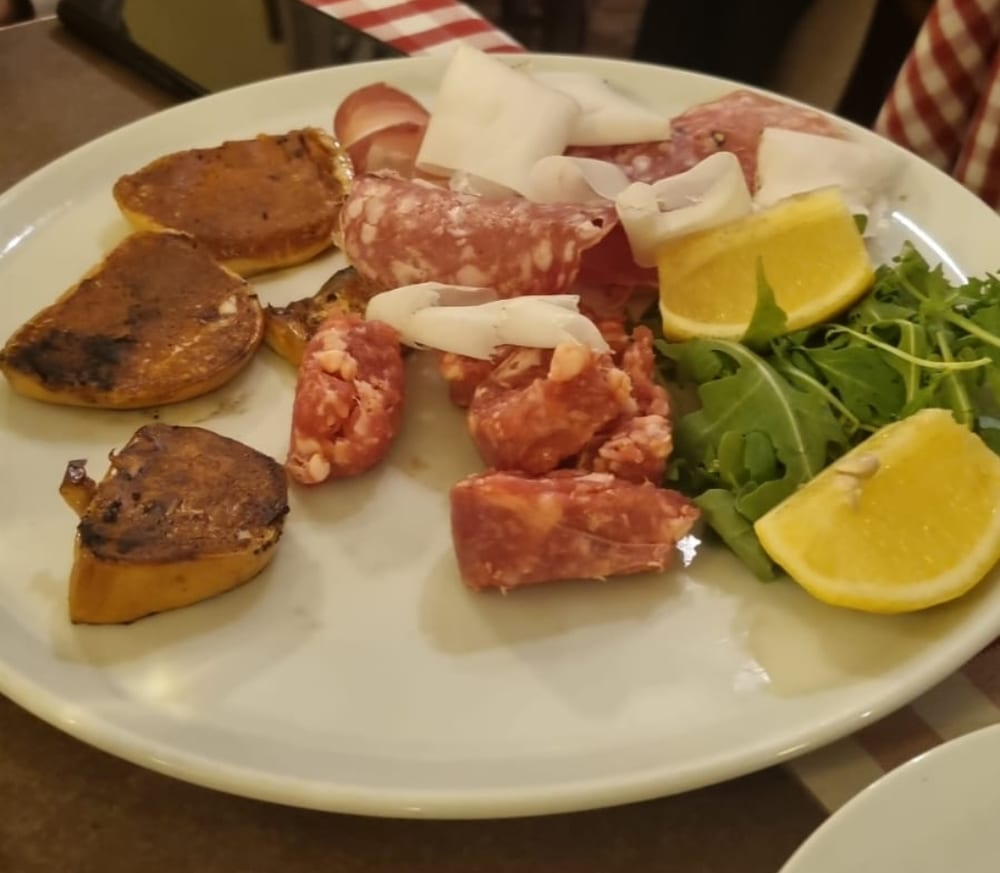
Taglieri & antipasti
Affettati toscani, crostini e carpaccio per aprire, generosi come si deve.
trattoria toscana, come a casa
In zona Sempione, la trattoria di Davide: cucina toscana genuina, fatta in casa, con porzioni abbondanti e il prezzo giusto. Si entra e ci si sente subito a casa — con il sorriso.
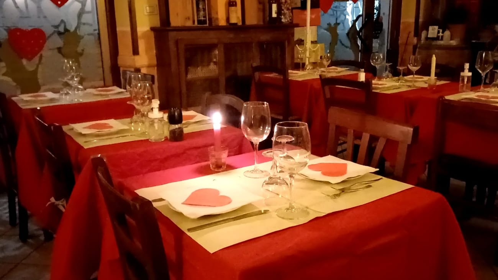
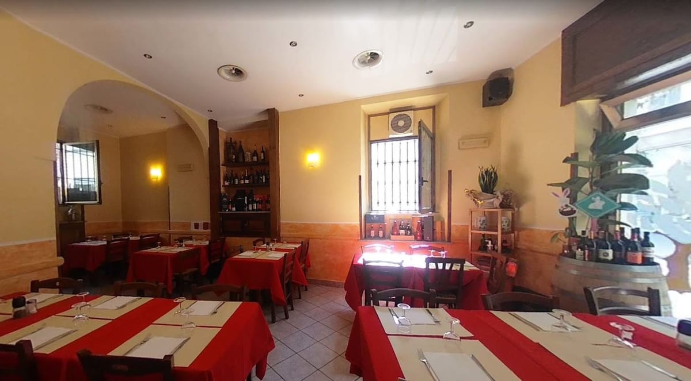
Da Davide
Il cuore del locale è Davide: cordiale, sempre con il sorriso, ti fa sentire subito a casa. È questa l'anima del Toscanaccio — una trattoria vera, dove si mangia bene e ci si diverte, senza troppe cerimonie.
Cucina toscana fatta con il cuore: piatti genuini, ingredienti di qualità e porzioni abbondanti. Al prezzo giusto, che di questi tempi non guasta.
…e il tiramisù lo facciamo sul momento!
// La lavagna del giorno
La lavagna cambia ogni giorno. Chiedi a Davide la specialità del momento.
In tavola

Affettati toscani, crostini e carpaccio per aprire, generosi come si deve.
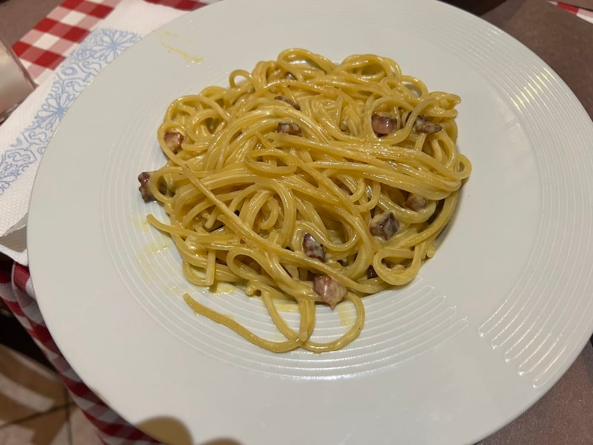
Ribollita, tagliolini ai funghi porcini e primi di stagione, fatti in casa.
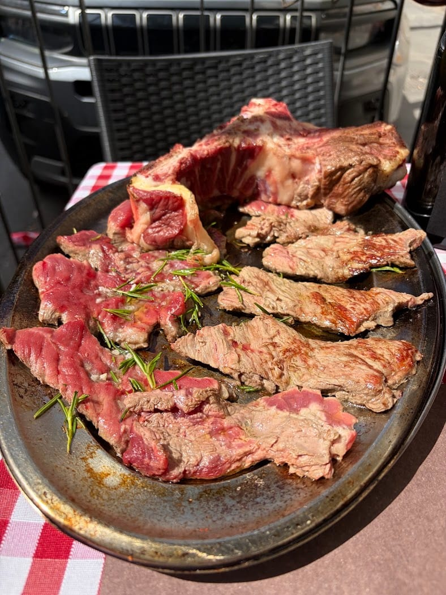
Fiorentina, tagliata e i secondi di carne: la specialità toscana per eccellenza.
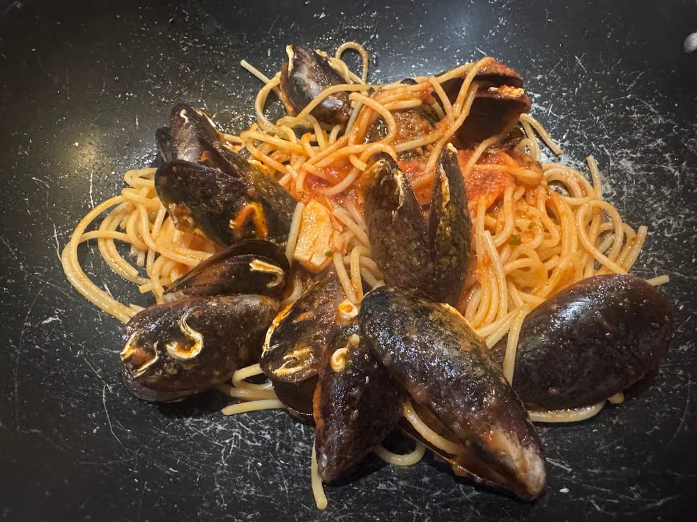
Pesce fresco, fritto misto e il tiramisù fatto al momento per chiudere.
Il menù cambia con le stagioni e con quello che c'è di buono al mercato.
La trattoria
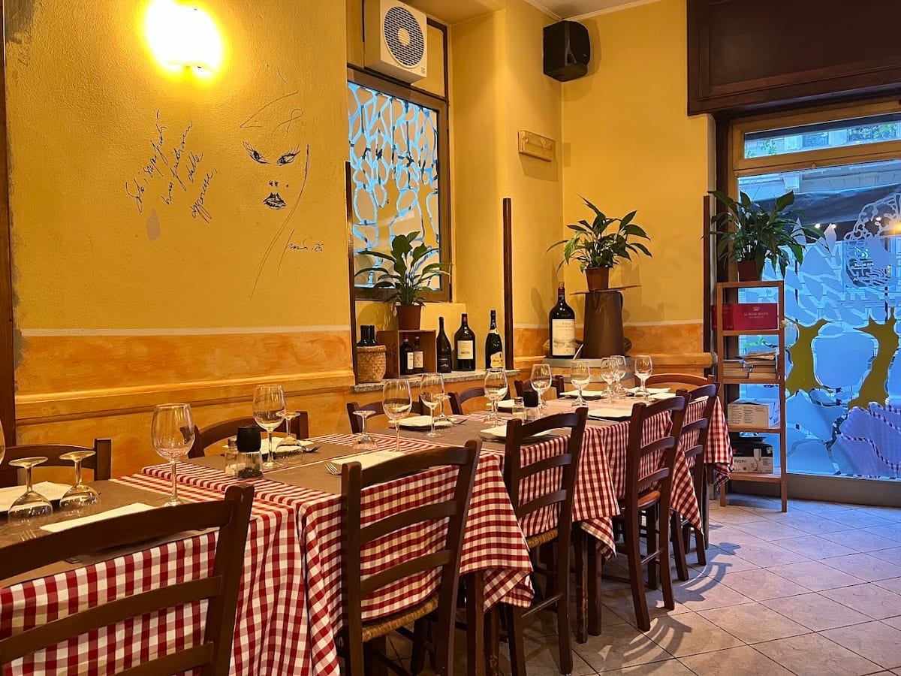
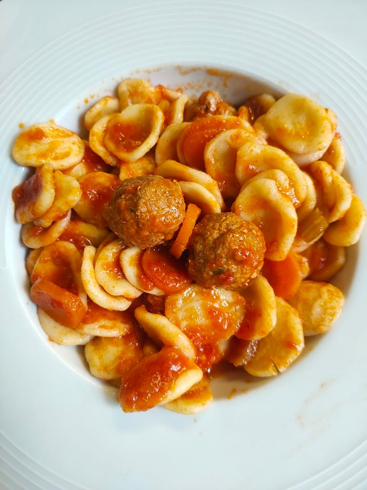
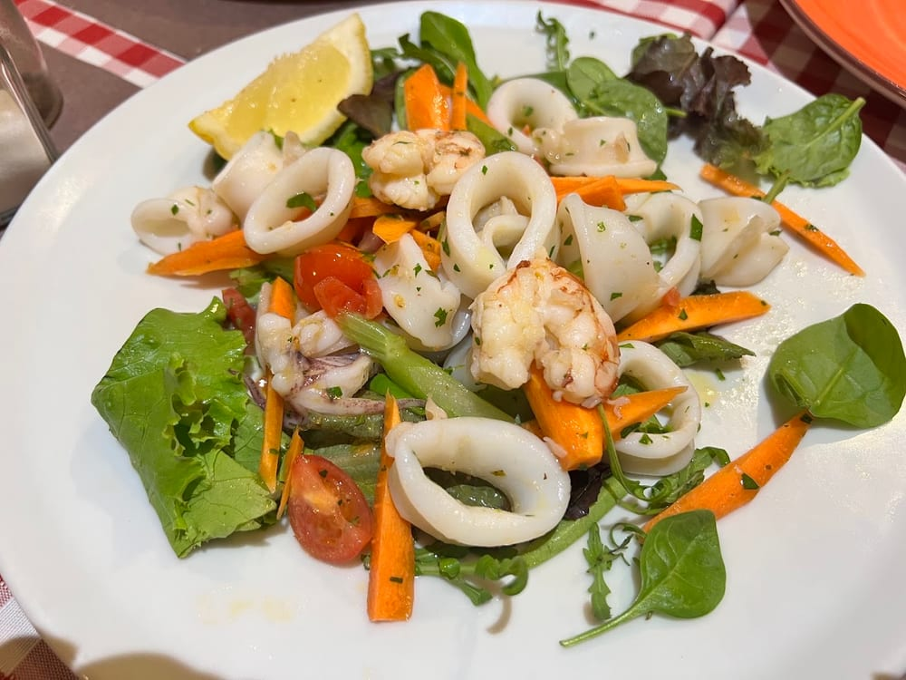
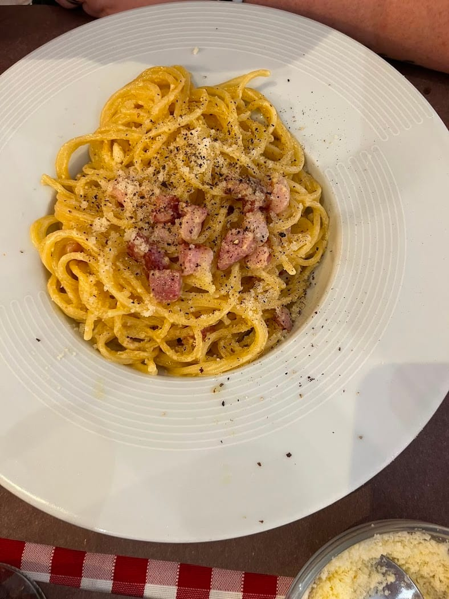
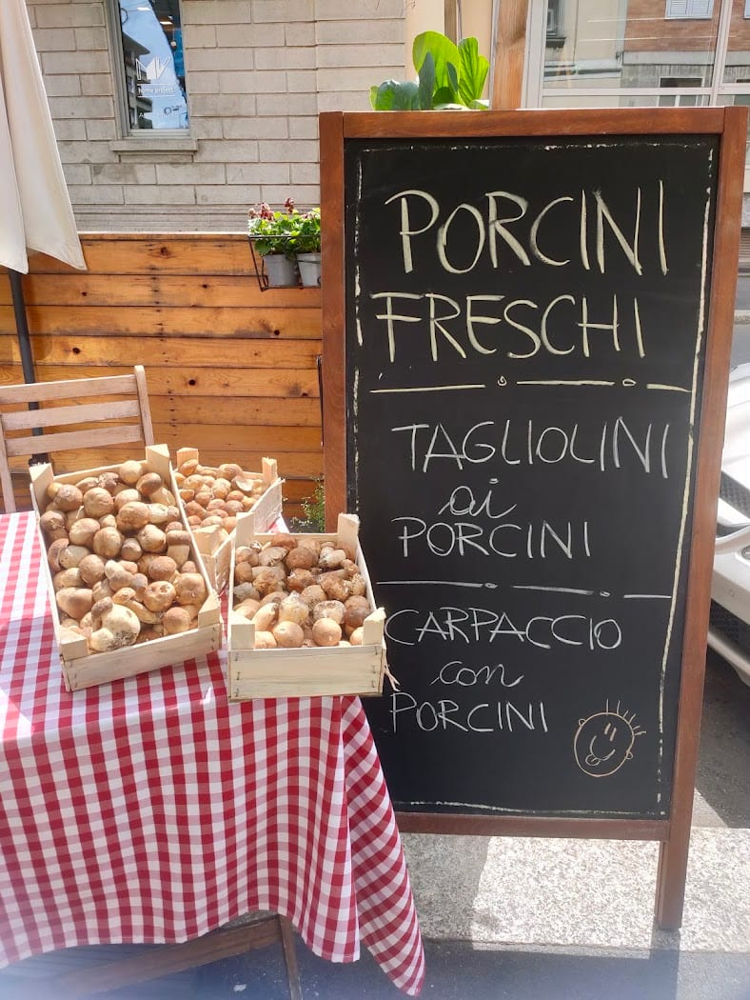
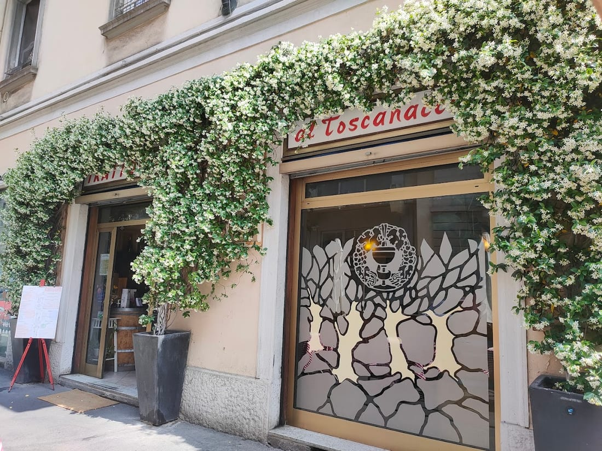
Le voci
Davide è il cuore del locale: la gestione familiare ti fa sentire subito a casa. Primi e secondi di carne e di pesce, sempre in porzioni abbondanti e ben preparate.
Luciano Ripamonti · ★★★★★
Esperienza semplicemente fantastica! Una trattoria che è un vero gioiello per chi ama la cucina tradizionale fatta con il cuore. Piatti genuini, sapori autentici.
Angela Venditti · ★★★★★
Per mangiare un boccone a Milano, in un posto familiare, con camerieri simpatici e al prezzo giusto, venite qui al Toscanaccio. Menù a 14€, carpaccio abbondante e succoso.
Valentina D'Onghia · ★★★★★
Cena di Natale con i colleghi: Davide e lo staff cordiali e precisi, sempre con il sorriso. Abbiamo mangiato e bevuto molto bene e ci siamo divertiti.
Claudio Cortina · ★★★★★
If there was an option to give 6 stars, I would. The food is so good, I would come back to Milan only to try it once again.
Alina Pashko · ★★★★★
Dove siamo
FAQ
In Via Privata Chieti 1, all'angolo con Via Piero della Francesca, a Milano (zona Sempione).
Tutti i giorni a pranzo 12–15 e a cena 19–22:30 (fino alle 23 il venerdì, sabato e domenica).
Cucina toscana genuina fatta in casa: taglieri, ribollita, tagliolini ai porcini, fiorentina, pesce e il tiramisù fatto al momento. Porzioni abbondanti, prezzo giusto.
Chiamando lo 02 341895, oppure online su TheFork. Locale familiare e frequentato: meglio prenotare.